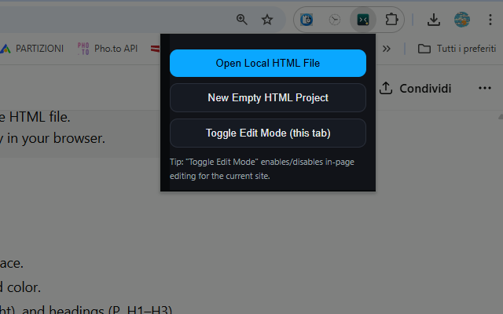
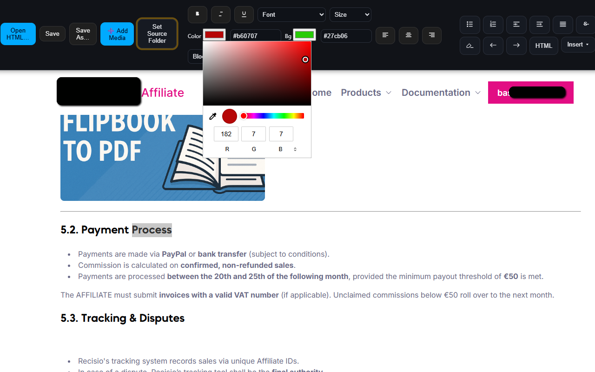

Free HTML Editor
Free HTML Editor is a lightweight, FrontPage-style visual editor that lets you tweak any HTML page quickly and safely—without servers, accounts, or complicated setups. Whether you’re polishing a landing page, fixing text on a static site, or swapping images for a client preview, the editor runs entirely in your browser and keeps your original files in your control. Click directly into the page to edit text, adjust fonts and colors with a compact floating palette, double-click images to change their source or link, and insert new media right at the caret. When you’re done, export a clean, non-editable HTML file that’s ready to share or publish.
The editor supports two simple workflows: toggle edit mode on a normal HTTP/HTTPS page, or use the built-in Local Editor to open a file from your computer. Point the tool at your project folder (or an assets/ directory) and it will resolve relative paths and inline images as Base64 data URLs—handy for moving a mockup around without dragging an entire asset tree. Need to add content? Use Add Media to insert an image from file or URL, or embed a YouTube/Vimeo video with a single link. Hyperlinks are just as easy: select text and click Link, or double-click an image to manage its link, copy the src, replace the file, or remove it entirely.
The inline palette gives you fine control over typography—font family, font size, text color, and background color—plus essentials like bold, italic, underline, alignment, and block types (P, H1–H3). If the browser doesn’t support a command, the editor gracefully applies styles via a wrapper <span>, keeping results predictable across pages. All editor UI (palettes, panels, and temporary attributes) is stripped on save, leaving a normal static HTML document. Scripts in your page aren’t executed while editing for safety, but they remain intact in the exported file.
Because everything happens locally, Free HTML Editor is private by design and works great offline. It’s ideal for designers and content editors who need rapid copy changes, image swaps, and lightweight prototypes; for developers who want a quick WYSIWYG pass before committing; and for teams that share HTML snapshots without a CMS. The result is a lean, dependable workflow: open, edit, insert, and save—no pipelines or build steps necessary. If a site’s external CSS is aggressive, the tool can still apply inline styles so your edits remain visible. Combined with image inlining, that makes portable previews a breeze.
In short, this editor focuses on the 95% of changes you actually make every day—text polish, media tweaks, and link management—while staying out of your way. It’s fast to launch, intuitive to use, and it produces clean output you can trust. Try it on a local file or a regular page, use Add Media to drop in images and embeds, and export a neat HTML you can send to clients or deploy as a static page.
📄 How to Use
- Open the built-in Local Editor and choose an HTML file, or toggle edit mode on a normal web page.
- (Optional) Click Set HTML Folder to resolve relative paths and inline images for preview/export.
- Select text to open the floating palette; adjust font, size, color, background, alignment, or block type.
- Double-click an image to open Image Info (replace, delete, copy src, add/edit link).
- Click Add Media to insert an image (file/URL) or embed a YouTube/Vimeo video.
- Press Save (or Save As…) to export a clean, non-editable HTML file.
📷 Screenshots


✅ Features
- Click-to-edit text with inline typography palette
- Add/edit links on text and images
- Double-click image panel (replace, delete, link, copy src)
- Add Media: insert image (file/URL) and embed YouTube/Vimeo
- Inline images as Base64 via project folder mapping
- Clean export that removes all editor UI and editability
- Private, offline, and runs entirely in your browser